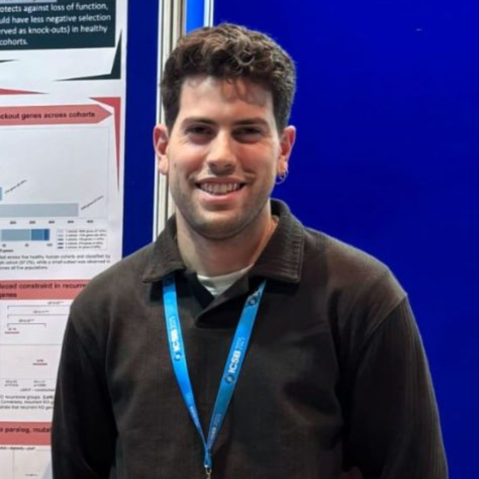
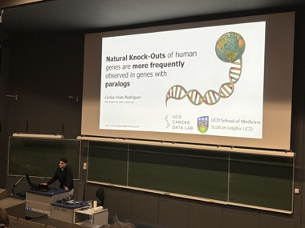
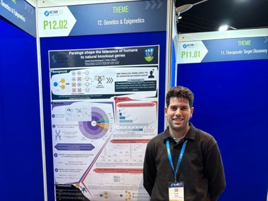

PhD Researcher
Computational Biology & Genomics · University College Dublin
I study why some genes can be lost without consequence while others, when mutated, cause severe disease — focusing on the role of paralogs as buffers of genetic variation in humans.

I am a PhD researcher at the Conway Institute, University College Dublin, working in the UCD Cancer Data Lab under the supervision of Prof. Colm J. Ryan. The lab uses large-scale genomic data to study how genetic variation shapes molecular interaction networks, with a particular focus on paralog biology, synthetic lethality, and gene essentiality in cancer. My PhD builds on this work, asking why some genes can be completely lost without consequence in healthy individuals while others, when mutated, cause severe inherited disease.
Before starting my PhD, I completed a Master's in Bioinformatics and Data Science in Personalised Precision Medicine and Health at the Escuela Nacional de Sanidad (ISCIII), Madrid, run in partnership with CNIO and the Barcelona Supercomputing Center. As part of the programme I undertook a research internship at the Conway Institute, funded through a grant obtained by Dr. Joanna Drabinska within Prof. Siobhán McClean's Vaccine and Infection Group. The computational side of the project was co-supervised by Prof. Ryan, and it was during this period — working at the interface of proteomics, orthology inference, and evolutionary genomics — that I developed the skills and interests that now define my research.
I hold a degree in Biotechnology from the Universidad de Extremadura (UEX), where I completed an extracurricular internship at Systems Biology Ireland under Prof. David Gomez Matallanas — my first exposure to academic research, and the experience that directed me towards computational biology.
My PhD project investigates paralog compensation in humans — specifically, why paralogs (duplicated genes) sometimes buffer against gene loss and sometimes fail to do so.
Most human genes have at least one paralog — a duplicate copy retained in the genome after duplication. These duplicates have long been thought to act as functional backups, yet around 80% of genes associated with inherited disease have a paralog that fails to compensate their loss. My PhD investigates this paradox: when does paralog compensation work, when does it fail, and why?
Using a computational approach that integrates large-scale population genomics with evolutionary and expression data, I aim to define the features that distinguish successful from failed compensation — with the long-term goal of identifying cases where restoring paralog function could have therapeutic relevance.
A locally hosted web application for comparative proteomic analysis. OrthoGather integrates orthology inference (via OrthoFinder) with Gene Ontology enrichment, enabling cross-species functional comparison without cloud dependency. It leverages annotations from any orthogroup member to bridge gaps in poorly annotated organisms.
Selected presentations from my PhD research.

"Natural Knock-Outs of human genes are more frequently observed in genes with paralogs"
Talk on how functional compensation between paralogs may contribute to the tolerance of loss-of-function genes in healthy human populations. The conference brought together researchers across genetics, evolutionary biology and bioinformatics.

"Paralogs shape the tolerance of humans to natural knockout genes"
Poster exploring how paralog buffering influences the ability of humans to tolerate loss-of-function mutations — at the intersection of genomics and systems biology. First international conference of my PhD.
Outside of my PhD, I am building complementary skills in areas that I find intellectually stimulating and that I believe will shape my future career.
Expanding my analytical toolkit beyond classical statistics into ML and DL — from scikit-learn to PyTorch and large language models. Particularly interested in their application to biological and genomic data.
Building tools and pipelines to extract insight from complex datasets. Interested in reproducible research, clean analysis workflows, and communicating data effectively across domains.